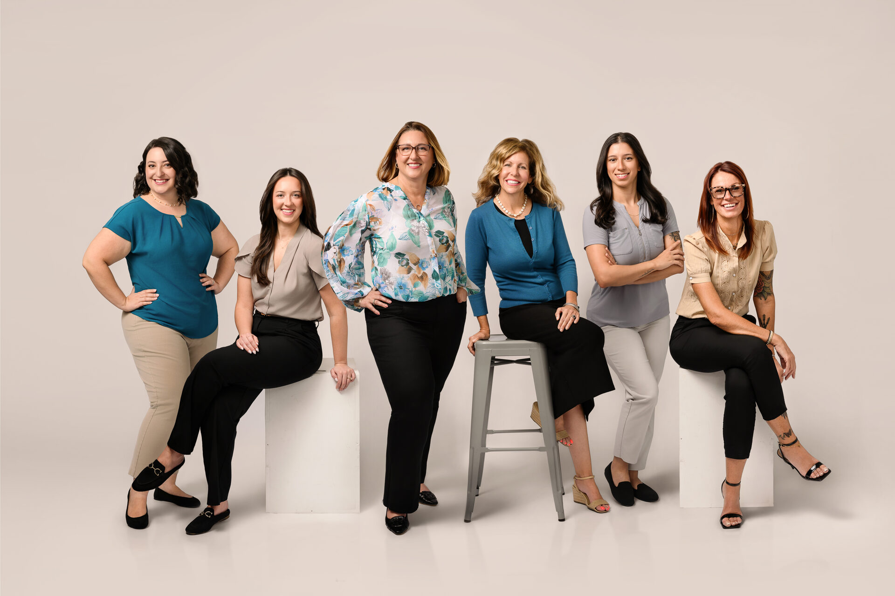
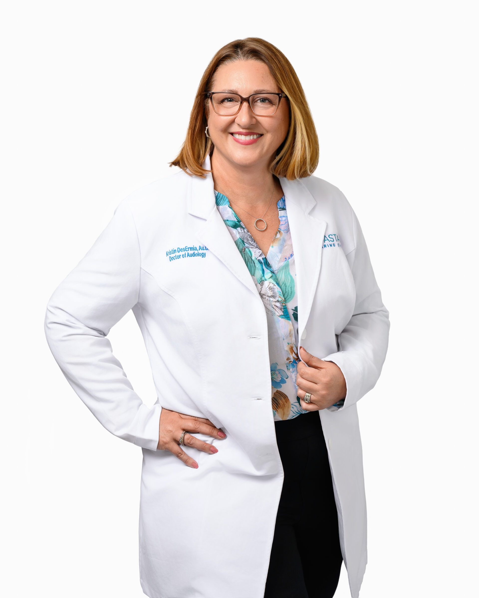
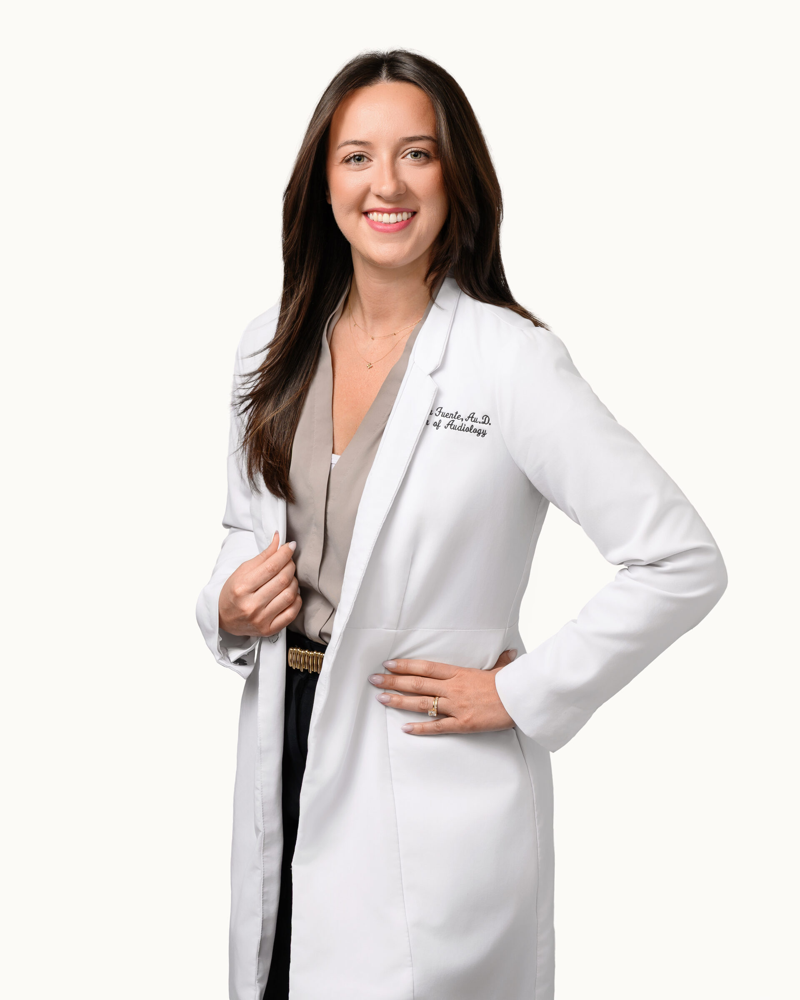
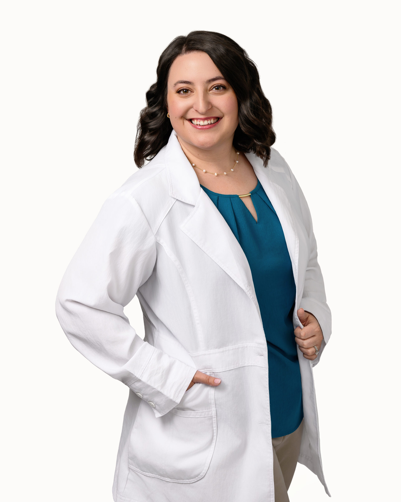
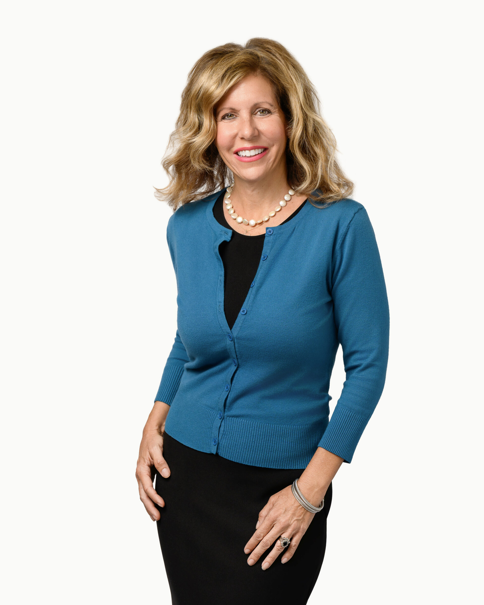
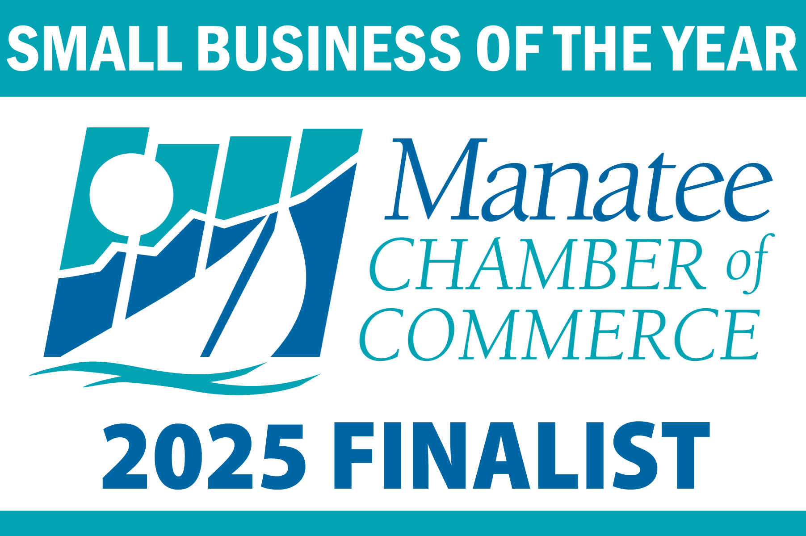

Cortez Road: (941) 344-2761
Lakewood Ranch: (941) 344-3575
About Coastal Hearing Care
We are a two-location private practice built around one simple idea: better hearing changes everything.
Get in Touch
Our Story
Coastal Hearing Care was founded to bring doctorate-level audiology to Bradenton and Lakewood Ranch, focused on education, best practices, and honest care rather than sales pressure.
Today, our team of Doctors of Audiology serves patients across the Gulf Coast from two convenient offices. We work with the major hearing aid manufacturers, use real-ear verification on every fitting, and follow up with every patient until they are satisfied.
We are proud members of the Dr. Cliff network of certified best-practice audiology providers, which means we meet a nationally recognized standard for quality of care and patient outcomes.

Questions patients ask
Our Values
Every provider on our team holds a Doctor of Audiology degree. You are cared for by a doctor, not a sales representative.
We use real-ear measurement and other evidence-based techniques on every hearing aid fitting to ensure your devices are programmed correctly.
We take the time to educate, listen, and follow up until you are satisfied with your results. Your hearing journey does not end at the fitting.
Our Team
Our team of Doctors of Audiology and patient care professionals is here to guide you at every step.

Doctor of Audiology, Owner
Founder of Coastal Hearing Care, dedicated to raising the standard of audiology care on the Gulf Coast.

Doctor of Audiology
Compassionate provider focused on patient education and long-term hearing outcomes.

Doctor of Audiology
Expert in diagnostic testing, hearing aid fittings, and tinnitus management.

Patient Care Coordinator
The friendly face who greets you at Cortez Road and helps you feel at home.
Audiology Assistant
Helps patients navigate scheduling, insurance, and hearing aid support.
Awards and Recognition
We have been honored by our community with multiple Best of Bradenton awards and Small Business of the Year recognitions. But the recognition that matters most is the trust our patients place in us every day.

Schedule your comprehensive hearing evaluation with our team of Doctors of Audiology.